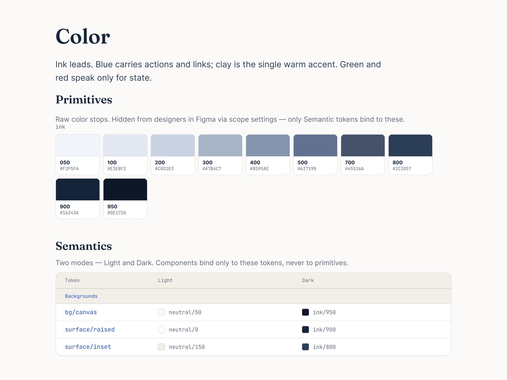
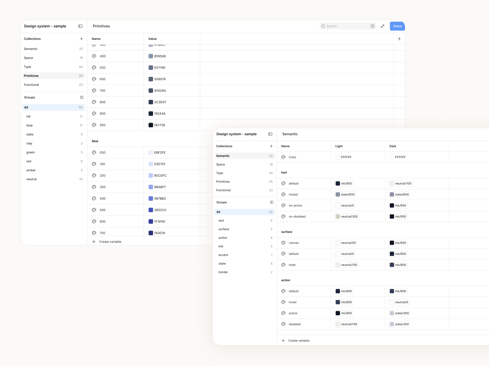
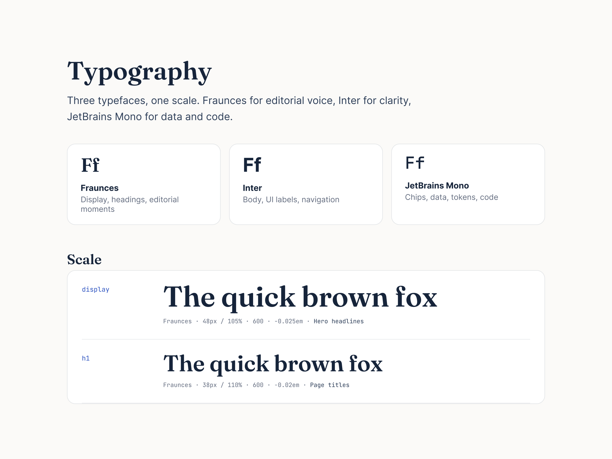
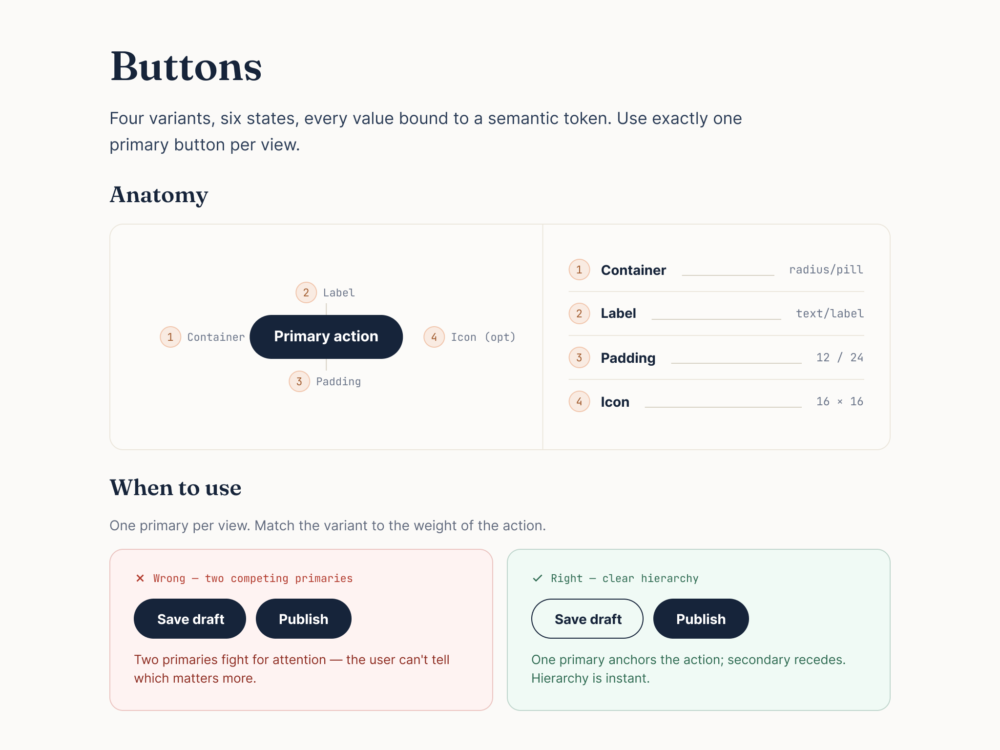
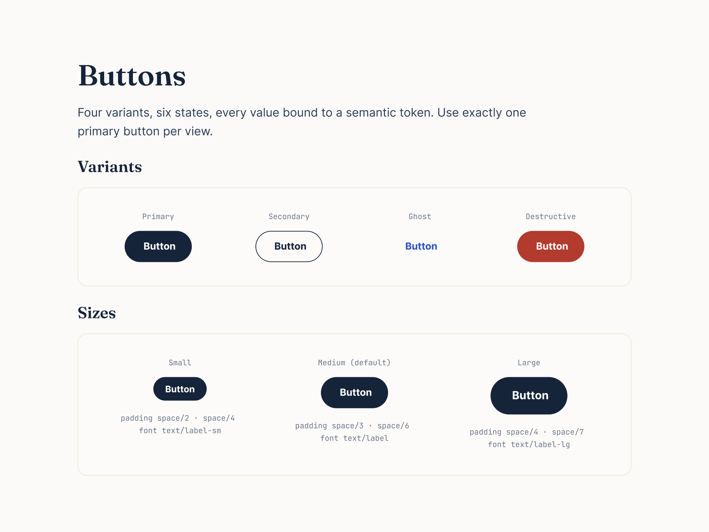
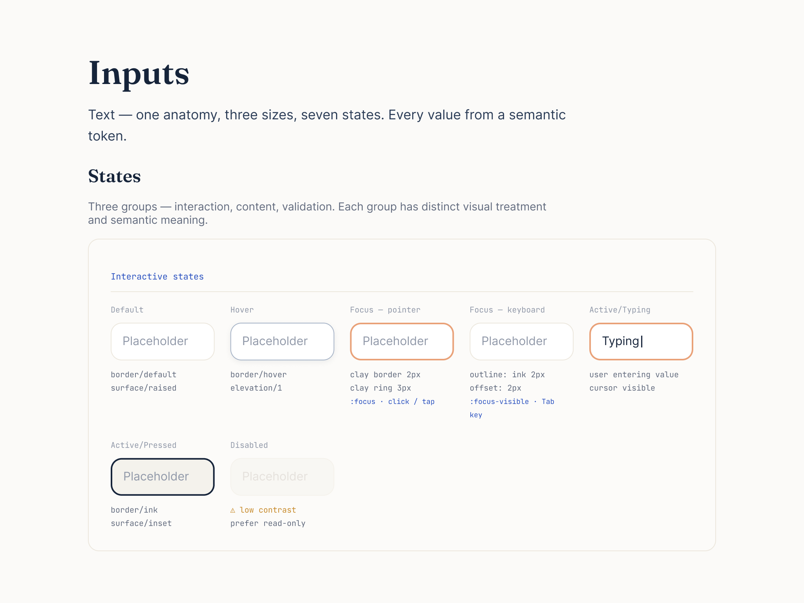
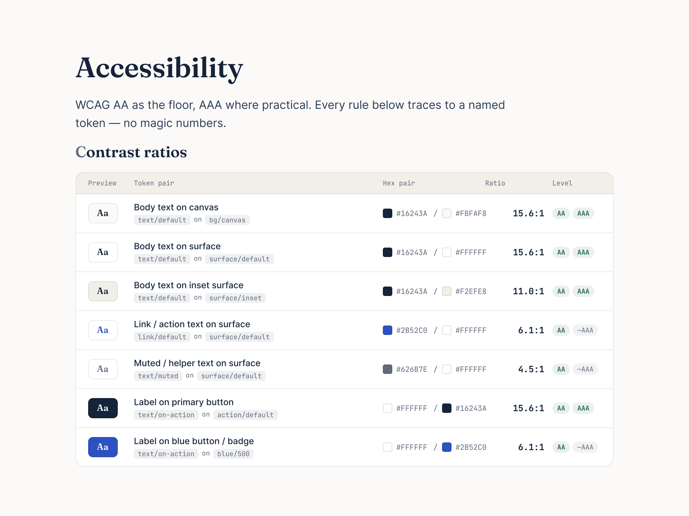

Goals.
- Prevent designers from duplicating or rebuilding the same components.
- Speed up design execution by giving teams ready, consistent building blocks.
- Ensure accessibility in every component, with proper contrast and keyboard-navigation rules built in.
- Keep working with development to build the components properly, with the documentation as the source of truth.
- Gather feedback from the people using it — designers first — to keep improving the system.
Foundations.
The foundations keep the product visually consistent and let designers work from one shared source instead of rebuilding the same things.

Defined colour roles.
Ink leads, blue carries actions and links, clay is the one warm accent. Documented as roles, with primitives and semantic tokens defined for both light and dark themes — so colour stays consistent wherever it's used.

Colour, built into Figma.
The same primitives and semantic tokens live in Figma as variables — so the system isn't just drawn, it's set up and ready to use.

Three typefaces, one feel.
Built around three typefaces that give the system its character and keep the page editorial and readable — Fraunces for headings, Inter for body and UI, JetBrains Mono for data and code, on one shared scale.
Components.
Each component is built with defined sizes, states, and accessibility, so it stays consistent everywhere it's used. For each one, the anatomy and usage are documented.

Button anatomy, and how to use it.
Each component is presented with its anatomy and a usage note — for buttons, one primary action per view, shown with a correct and an incorrect example.

Four button variants, three sizes.
The system presents four button variants across three sizes, every value bound to a token so a button looks and behaves the same wherever it appears.
See the button guidelines →
Inputs — the most complex element.
The input is probably the most complex element in the system — one anatomy carrying many states, all carefully documented: default, hover, focus by pointer, focus by keyboard, typing, pressed, and disabled.
Accessibility.

Checked on every element.
Contrast, font sizes, and spacing were checked for accessibility on every element — contrast as named token pairs, so it passes by default rather than being decided screen by screen.
Everything radiates from the core.
Raw tokens sit at the centre. Components orbit the edge. Each ray is a real dependency — hover a part to trace exactly what it's built from.